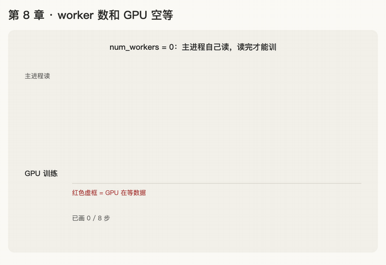

第 8 章 · Dataset 与 DataLoader：给 GPU 备菜的流水线
本章回答：
Dataset和DataLoader各管什么？一个 batch 是怎么拼出来的？num_workers、pin_memory、collate_fn是干嘛的？为什么数据加载慢会让 GPU 闲着？
讲解日期：2026-11-14 · 上一章：第 7 章 nn.Module · 下一章：第 9 章 训练循环
对应原文：00-overview.md §3、§6.2 第一行；官方文档torch.utils.data（〔在线〕）；AISPE ch13「优化数据输入流水线」（ch13.md第 1552–1561 行）；本章输出在本机 torch 2.15.0 上跑过（代码见本章末尾"代码对照"）本章缩写：I/O = Input/Output（输入 / 输出，这里指读硬盘）；batch（批）= 一次喂给模型的一组样本；全部缩写见 附录 · 缩写与术语表
讲解
第一步：Dataset 管"第 i 个是什么"，DataLoader 管"怎么一批批送"（2026-11-14）
类比：餐厅备菜。 Dataset 是菜谱 + 仓库：你说"第 7 号菜"，它就把这一份做出来（读图片、解码、增强）。DataLoader 是传菜员：决定按什么顺序拿、几份装一盘、找几个帮手同时备菜、盘子送到哪。
自己写 Dataset 只要两个方法：
class MyDataset(Dataset):
def __init__(self, files): self.files = files
def __len__(self): return len(self.files) # 一共几份
def __getitem__(self, i): # 第 i 份是什么
x = load_and_augment(self.files[i])
return x, label_of(self.files[i])
现成的 TensorDataset(X, y) 直接把两个张量按第 0 维配对。
一个 batch 怎么拼（实测）：
ds = TensorDataset(torch.randn(10, 4), torch.arange(10))
for xb, yb in DataLoader(ds, batch_size=4):
print(tuple(xb.shape), yb.tolist())
# (4, 4) [0, 1, 2, 3]
# (4, 4) [4, 5, 6, 7]
# (2, 4) [8, 9] ← 最后一批不满
10 个样本、每批 4 个 → 3 批，最后一批只有 2 个。drop_last=True 会扔掉不满的那批（len(loader) 变成 2）。训练时常扔掉，因为 batch 大小变了会影响 BatchNorm 和第 6 章的编译（形状变 → 重编译）。
DataLoader 内部三步：sampler（采样器）出下标（shuffle=True 时每个 epoch 打乱）→ 对每个下标调 ds[i] → collate（拼盘）把一组样本叠成一个张量（默认 torch.stack）。
一句话：Dataset 回答"第 i 个是什么"，DataLoader 负责打乱、分批、拼盘、并行备菜。
第二步：collate_fn——长短不一怎么拼（2026-11-14）
默认的拼盘是 torch.stack，要求每个样本形状一样。句子长短不一时就会报错，要自己写 collate_fn，最常见的是补齐（padding）：
seqs = [torch.ones(2), torch.ones(5), torch.ones(3)]
nn.utils.rnn.pad_sequence(seqs, batch_first=True)
# tensor([[1., 1., 0., 0., 0.],
# [1., 1., 1., 1., 1.],
# [1., 1., 1., 0., 0.]])
补到最长的 5，空位填 0，同时通常再返回一个 mask（哪些是真数据），让 attention 和 loss 忽略补出来的位置（第 15 章 ignore_index）。
LLM 预训练常用另一种做法：把很多文档首尾相连成一条长流，切成固定长度（比如 2048）的块，就没有补齐的浪费（CS336 a1 的数据加载就是这样）。
一句话：样本形状不一时自己写 collate_fn：补齐 + mask，或者拼接后切成定长。
第三步：num_workers——找帮手并行备菜（2026-11-14）
num_workers=0（默认）时，主进程自己读数据。读一批的时候，GPU 只能干等。
数字演示：读 + 增强一批要 40 ms（CPU），GPU 训练一步要 25 ms。
| num_workers | 平均每批数据多久出来一份 | GPU 每步要等多久 |
|---|---|---|
| 0 | 40 ms，而且和训练串行 | 40 ms（每步 65 ms，GPU 忙 38%） |
| 1 | 40 ms（和训练并行了） | 40 − 25 = 15 ms |
| 2 | 20 ms | 0（数据比训练快） |
| 4 | 10 ms | 0 |
规律：\(\text{num\_workers} \ge \frac{\text{读一批的时间}}{\text{训练一步的时间}}\) 时，GPU 就不再等数据（这里 40 / 25 = 1.6，要 2 个以上）。
几个配套参数：
| 参数 | 作用 |
|---|---|
num_workers=k |
开 k 个子进程，各自调 ds[i]、拼 batch |
prefetch_factor（默认 2） |
每个 worker 提前备好几批 |
persistent_workers=True |
epoch 之间不关掉 worker，省掉每个 epoch 重新启动进程的时间 |
pin_memory=True |
把 batch 放进锁页内存，配合 .to("cuda", non_blocking=True) 异步拷进显存（第 5 章第三步） |
worker 的坑：每个 worker 是独立进程，有自己的一份 Dataset 拷贝和随机数状态。用 numpy 随机增强时要在 worker_init_fn 里给每个 worker 设不同种子，否则几个 worker 可能产生一样的"随机"增强（PyTorch 自己的 torch 随机数已经按 worker 区分）。Dataset 里别打开大文件句柄后再 fork，最好在 __getitem__ 里按需打开。
一句话：worker 数 ≥ 读一批 ÷ 训一步，GPU 就不等数据；再配 pin_memory + non_blocking 让拷贝也异步。
第四步：两种 Dataset 和分布式采样（2026-11-14）
| map-style（下标式） | iterable-style（流式） | |
|---|---|---|
| 写法 | __len__ + __getitem__(i) |
__iter__，一条条吐 |
| 能随机打乱吗 | 能（sampler 打乱下标） | 不能直接打乱，用缓冲区局部打乱 |
| 适合 | 数据能按编号随机读（图片文件夹、内存数组） | 数据太大或只能顺序读（网络流、超大 shard 文件） |
多卡训练时，每张卡要拿不同的样本：用 DistributedSampler，它按卡号把下标切开；每个 epoch 开始前调 sampler.set_epoch(epoch)，不然每个 epoch 打乱顺序都一样（第 16 章）。
一句话：能随机取用 map-style，只能顺序读用 iterable-style；多卡用 DistributedSampler 并每轮 set_epoch。
动画演示：worker 数和 GPU 空等

可交互版：animations/08-dataloader-workers.html。滑块调 num_workers（0 / 1 / 2 / 4）和"读一批要多久"。
怎么看：
- 上面几行是 worker，每个方块是"备好一批"；最下面一行是 GPU 训练；
- num_workers = 0 时备菜和训练排成一条线，GPU 有一半以上时间在等；
- 加 worker 后备菜并行，GPU 方块逐渐首尾相接；右边显示 GPU 忙碌占比。
练习与作答记录
题 1：1000 个样本，batch_size=64，drop_last=False 时一个 epoch 有几批？最后一批几个？drop_last=True 时呢？
作答：（待作答）
题 2：读一批要 90 ms，训一步要 30 ms。num_workers 至少要几个 GPU 才不等数据？num_workers=0 时 GPU 忙碌占比大约多少？
作答：（待作答）
题 3：一批句子长度是 3、7、4，默认 DataLoader 为什么会报错？写 collate_fn 时除了补齐，还应该额外返回什么？
作答：（待作答）
口诀
Dataset 管第 i 个是什么，DataLoader 管打乱分批拼盘；
长短不齐自己拼，补齐加 mask；
worker 数 ≥ 读一批 ÷ 训一步，pin_memory 配 non_blocking；多卡 DistributedSampler，每轮 set_epoch。
本章复习卡片
- P24（DataLoader 三步：sampler 出下标 →
ds[i]→ collate 拼盘；10 个样本 batch 4 → [4, 4, 2]，drop_last） - P25（num_workers ≥ 读一批时间 ÷ 训一步时间；prefetch_factor、persistent_workers、pin_memory）
- P26（变长样本：collate_fn 补齐 + mask；map-style vs iterable-style；DistributedSampler + set_epoch）
附录 · 延伸阅读
推荐阅读
| 读什么 | 读哪里 | 读它为了什么 |
|---|---|---|
★ 官方文档 torch.utils.data |
"Dataset Types"、"Data Loading Order and Sampler"、"Multi-process data loading"、"Memory Pinning"（〔在线〕） | 本章四步的官方说明，含 worker 随机数细节 |
| AISPE 第 13 章 | ch13.md 第 1552–1561 行「优化数据输入流水线」 |
数据管道调优要点 |
| CS336 a1 handout | 数据加载一节（get_batch：从一长串 token 里随机切定长片段） |
第二步"拼接后切定长"的作业版 |
| 《深入浅出 PyTorch》 | 第 3 章 数据读入（〔在线〕） | 中文的 Dataset 写法范例 |
数学原理
- 批数：\(\lceil N / B \rceil\)（不扔）或 \(\lfloor N / B \rfloor\)（
drop_last）。 - 流水线吞吐：\(k\) 个 worker、每批读取时间 \(t_d\)，供给速度约 \(k / t_d\) 批每秒；训练消耗 \(1 / t_s\)。GPU 不等的条件 \(k / t_d \ge 1 / t_s\)，即 \(k \ge t_d / t_s\)。
公式 / 代码清单
| 写法 | 意思 |
|---|---|
Dataset.__len__ / __getitem__ |
map-style 数据集 |
DataLoader(ds, batch_size, shuffle, drop_last, num_workers, pin_memory, persistent_workers, prefetch_factor, collate_fn) |
常用参数 |
nn.utils.rnn.pad_sequence(seqs, batch_first=True) |
补齐 |
DistributedSampler(ds) + sampler.set_epoch(e) |
多卡切分 |
代码对照：把本章的数字用代码算一遍
用 torch 把讲义里的数字跑一遍。代码在仓库本地
pytorch-deep-dive/solutions/chapter-code/ch08_dataloader.py，配套测试tests/test_ch07_15.py；同一章的 notebook：notebooks/ch08_dataloader.ipynb（讲解和代码放在一起，一格一格边读边跑）。Mac 上直接能跑，不需要 GPU：
bash cd pytorch-deep-dive/solutions/chapter-code uv run python ch08_dataloader.py # 一步一步打印 uv run pytest tests/test_ch07_15.py
讲义 ↔ 代码：
| 讲义 | 公式 / 说法 | 写法 | 跑出来 |
|---|---|---|---|
| 第一步 分批 | ⌈10 / 4⌉ = 3 | batches() |
[4, 4, 2]；drop_last 时 2 批 |
| 第二步 补齐 | 补到最长 | pad_demo() |
长度 2、5、3 → 5 |
| 第三步 worker 数 | k ≥ t_d / t_s | gpu_busy(40, 25, k) |
0 个 38%，2 个 100% |
关键几行：
ds = TensorDataset(torch.randn(10, 4), torch.arange(10))
DataLoader(ds, batch_size=4, drop_last=False) # 4, 4, 2
nn.utils.rnn.pad_sequence(seqs, batch_first=True)
代码里才看得到的 2 件事：
gpu_busy是理想模型：只算稳定后的吞吐，不算启动 worker 的开销和第一批的等待。pad_sequence默认补 0：要补别的值用padding_value=。
自己改一改（不影响练习答案）：
gpu_busy(60, 25, k)对 k = 1、2、3 各算一遍，看要几个 worker。- 给
pad_demo加padding_value=-1。